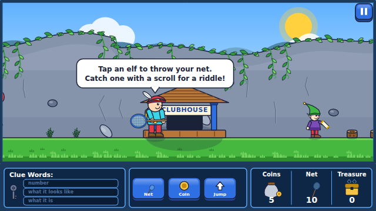
Three ways to play
The browser version is a web app: put it on the home screen and it opens full screen with its own icon, works offline and keeps your progress, exactly like a store app. That is how to play on an iPad or iPhone, where nothing else can be installed.
iPad & iPhone
- Open the game in Safari (not Chrome).
- Tap Share, the square with an arrow.
- Scroll down, tap Add to Home Screen, then Add.
Android tablet & phone
- Open the game in Chrome.
- Tap the Install app button on the title screen, or the browser's ⋮ menu → Install app.
- Prefer a real APK? Download it and see the sideloading steps.
Computer
- Open the game in Chrome or Edge (Firefox and Safari play it in a tab).
- Click Install on the title screen, or the small install icon at the right end of the address bar.
- It shows up in your apps like any other program.
The home-screen copy updates itself the next time it opens with a connection. The web version and the APK keep separate progress.
What's inside
The original loop
Three levels of the mountain, elves to net, scroll riddles, three clue words that describe one group of scenery ("two small trees"), magic coins to search behind things, a key to climb, a castle of ladders, a chest to fill, a prize for the clubhouse, and stars on the rank poster at 5, 25, 70, 115, 170, 230 and 300 treasures.
Six grades
Pick K, 1st, 2nd, 3rd, 4th or 5th grade on the way in. Every puzzle family has a version for each grade, gets harder from the bottom of the mountain to the top, and again as stars are earned. Each grade keeps its own treasures, stars and prizes.
41 puzzle families
Reading: rhymes, letter sounds, letters, vowel sounds, compound words, opposites, synonyms, categories, word associations, syllables, plurals and tenses, contractions, homophones, prefixes and suffixes, analogies, ABC order, sentence completion, parts of speech, vocabulary. Math: counting, adding and subtracting, comparing, multiplying, dividing, patterns, place value, telling time, money, shapes and geometry, fractions, word problems, even and odd, factors and primes, measurement. Thinking: odd one out, riddles, animals, earth and sky, the body and senses, matter and machines, sequences of events, bigger-heavier-faster.
Made for small hands
Tap the ground to walk, tap an elf to throw the net, big NET / COIN / JUMP buttons, three big answer buttons (four from 3rd grade), a speaker button that reads the riddle aloud, two tries per riddle (three for K and 1st), and no way to lose: out of nets and coins, the rock gives you free nets.
Tiny and private
All art is vector, all sounds are synthesized. One HTML file, 207 KB gzipped in the browser and a 217 KB APK on Android. Nothing leaves the device; there are no accounts, no ads and no tracking.
Keyboard too
On a computer: ← → walk, Space swings the net, ↓ drops a coin, ↑ jumps, climbs and enters tunnels, 1–4 pick an answer, Esc pauses.
See it run
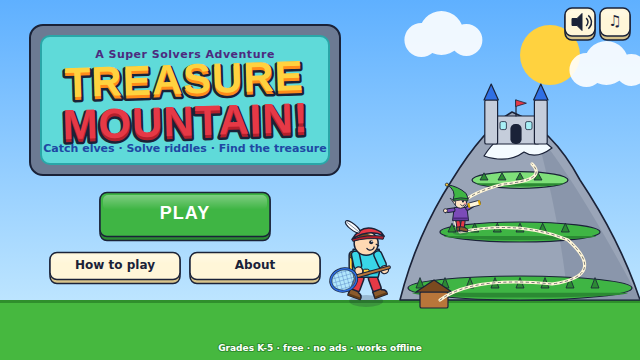
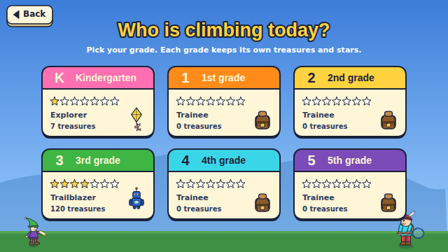
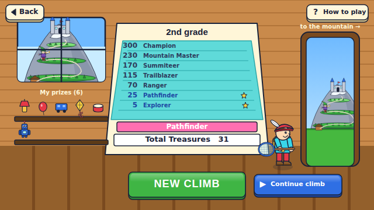
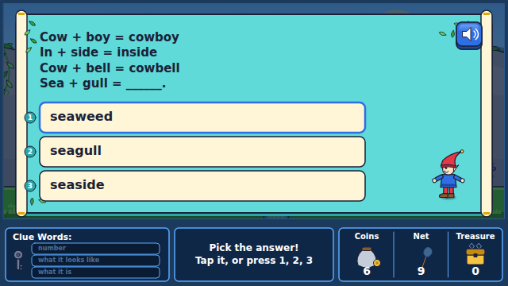
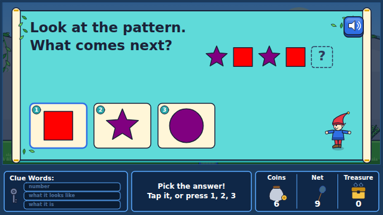
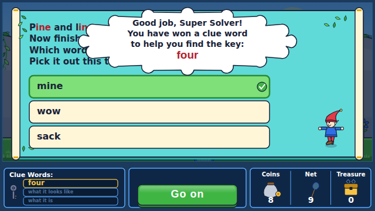
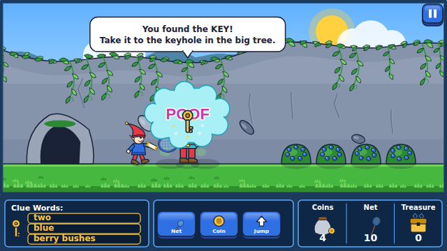
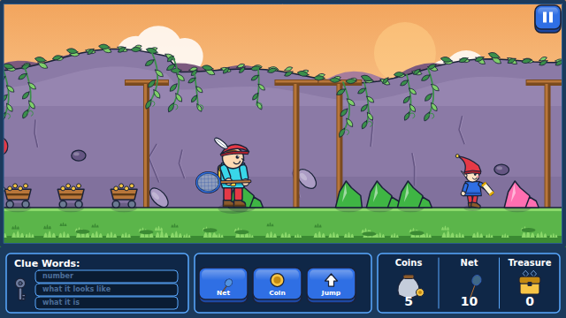
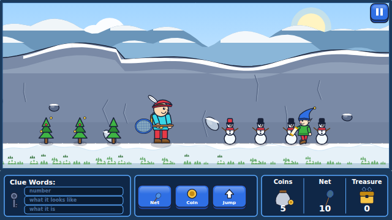
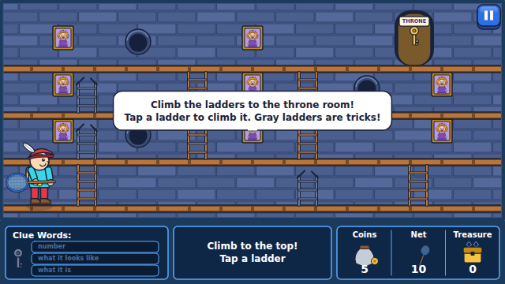
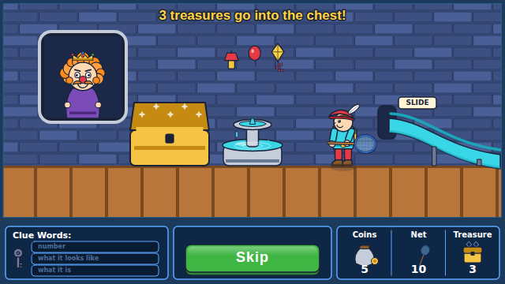
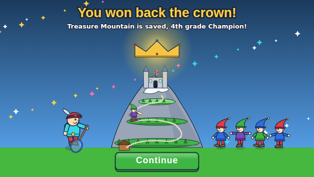
How to play
- Catch an elf. Tap an elf (or press Space when it is close) to swing your net. Each throw uses one net.
- Answer the riddle. Elves carrying a scroll ask a riddle. A right answer wins a clue word and two coins. Catching any elf gives a coin.
- Read the clue words. The three words describe one group of things on the level: a number, what it looks like, and what it is, for example two · small · trees.
- Drop a coin. Stand in front of things that match your clue words and tap COIN (or ↓). The scenery goes POOF and shows what was hiding behind it.
- All three match: the key. Two of three match: a treasure. Take the key to the big tree, the elf fountain or the castle door and press ↑ to climb.
- Need nets? Drop coins at the NETS rock (5 nets for 4 coins). No nets and no coins? The rock rolls aside and gives you nets for free.
- Climb the castle. Tap ladders to reach the throne room; gray ladders are tricks. Fill the chest, keep one treasure as a prize, and earn stars on the poster in the clubhouse.
Installing the Android app (APK)
The APK is the same game as a native Android app. It is not on the Play Store because this is a hobby project, so Android asks for permission once.
- On the tablet, open this page in Chrome and tap Download for Android (APK).
- When the download finishes, tap the notification (or open the Files app and tap app-release.apk).
- Android says it needs permission to install apps from this source. Tap Settings, switch on Allow from this source, then go back.
- Tap Install. If Play Protect asks, choose Install anyway.
- Find Treasure Mountain in the app drawer and play. Updates install over the old version and keep your progress. You can switch the permission off again afterwards.
The APK is built and signed by the GitHub Actions workflow in the repository, so what you download is exactly what the source code produces.
For grown-ups
| Grade | Reading | Math | Thinking & science |
|---|---|---|---|
| K | letters, beginning sounds, rhymes, opposites, categories, sight-word sentences | counting to 10, adding and subtracting within 10 with pictures, shapes, patterns, coins, clocks on the hour, longer/heavier | animal sounds and babies, seasons and weather, senses, float/sink, first-next-last, odd one out by color, shape and number |
| 1 | ending sounds, digraphs, vowel sounds, compound words, synonyms, plurals, syllables | counting to 100, within 20, tens and ones, half hours, counting coins, halves and quarters | homes and groups, sun/moon/stars, body parts, materials, daily routines |
| 2 | blends, contractions, homophones, ABC order, context clues | within 100, equal groups, hundreds, five minutes, quarters, thirds, even/odd, thermometers | animal classes, the water cycle, healthy food, solid/liquid/gas, life cycles |
| 3 | prefixes and suffixes, analogies, parts of speech, vocabulary | 3-digit sums, multiplication and division facts, rounding, elapsed time, change, perimeter, comparing fractions | adaptations, planets, organs, magnets and simple machines, procedures |
| 4 | harder analogies, adjectives and adverbs, tier-2 vocabulary | multi-digit, 2-digit × 1-digit, remainders, millions, angles and area, equivalent fractions, unit conversions | food chains, moon phases and rocks, body systems, energy and light, cause and effect |
| 5 | academic vocabulary, pronouns and conjunctions, tense in context | decimals, 2-digit × 2-digit, primes and GCF, volume and coordinates, unlike fractions, multi-step problems | ecosystems, the solar system, cells, electricity and forces, logic puzzles |
Riddles get harder from level 1 to level 3, and again as stars are earned. Everything is generated, so the same riddle rarely repeats. The full per-family, per-grade measurements are in DIFFICULTY.md; the design in DESIGN.md; and the notes on the original game in the research document.
About
An open-source fan remake of The Learning Company's 1990 Super Solvers: Treasure Mountain!. The rules follow the original (nets, scroll riddles, three clue words, magic coins, keys, tunnels, the net rock, the castle ladders, the chest, the rank poster) with new vector art, big touch targets, read-aloud riddles and six grade levels of content, so that a five-year-old and a ten-year-old can both climb the same mountain.
One TypeScript code base runs everywhere: the game logic, puzzles and drawing run in the browser and inside a 217 KB Android WebView shell. The pictures on this page are rendered by the game itself. Source code on GitHub.